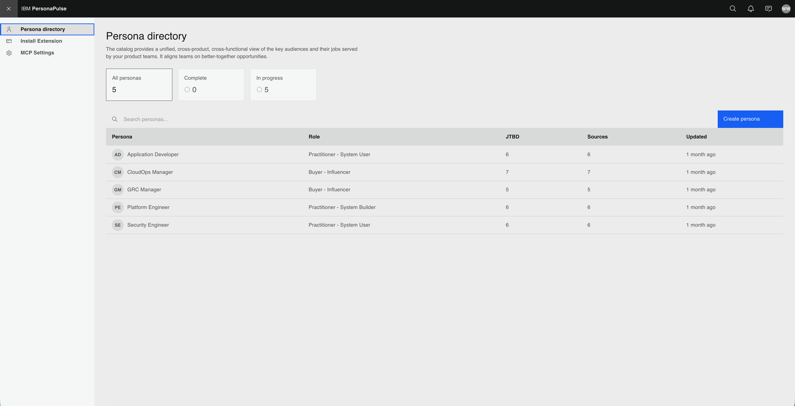
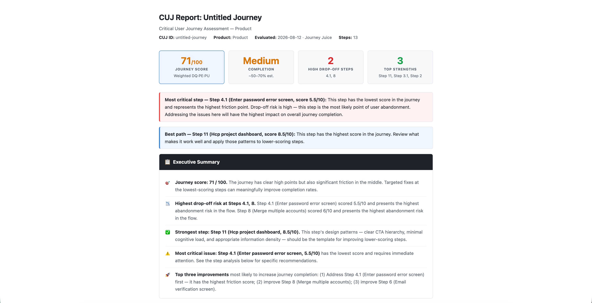
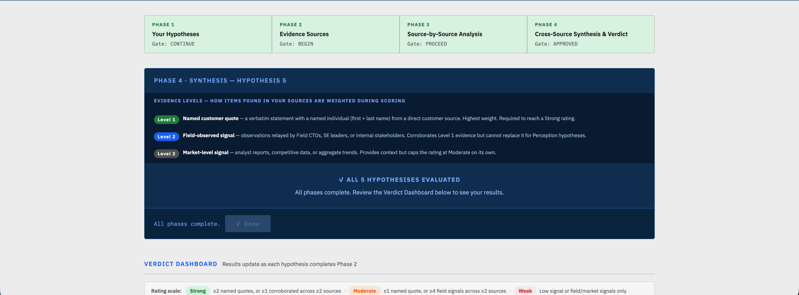
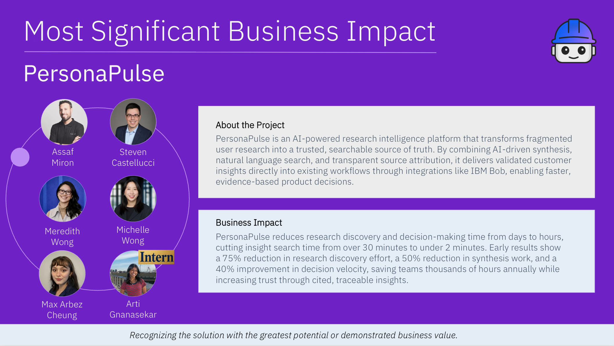

Context
At IBM, the research team runs research sprints: focused windows of a few days to a week where we dig into a specific topic and interview employees inside and outside IBM about products, workflows, and everything in between. Each sprint produces a large body of insights, which sits alongside PRDs, spreadsheets, websites, and our own secondary research.
Over 12 weeks as a UX Design & Research Intern, I worked on three projects aimed at one question:
How do we make research actually get used?
Problem
Collecting research is the easy part. Keeping it organized is harder, and getting it into the hands of the PMs, engineers, and designers who need it is harder still.
Insights end up scattered across transcripts, files, and tools. Teams either:
- Don’t know the research exists
- Can’t find what they need
- Have to spend time re-explaining context before they can use it
The result is that valuable research goes underused, and decisions get made without the evidence behind them.
Process
I designed and built all three tools using IBM Bob, GitHub Copilot, and Figma, moving from problem framing to working prototypes. Each project targeted a different point where research breaks down:
Persona Pulse
Finding it
Surfacing insights when someone needs them.
Journey Juice
Applying it
Turning research into evaluations of real user journeys.
HERD
Testing against it
Checking assumptions against existing evidence.
Solution
1. Persona Pulse
An AI-powered research platform that turns scattered user research into a searchable source of truth.

Teams can ask questions in plain language and get concise, research-grounded answers with full traceability back to the original sources. For example, a PM writing a PRD can ask “Who typically handles these responsibilities?”, then select a persona like Platform Engineer or CloudOps Architect and ask “What are their typical jobs-to-be-done with this product?”
Through MCP integration with AI agents like IBM Bob, Persona Pulse works both on the web and directly inside the IDE, so users can query research data alongside their own files without having to supply extra context.
2. Journey Juice
An AI-powered tool that evaluates user journeys and turns research into prioritized recommendations.

Users upload screenshots or a Figma link with labeled frames. The tool extracts the frames in order, evaluates each step of the journey, and returns a confidence score, strengths and weaknesses, and specific recommendations for improving individual screens and workflows.
Every finding is linked to the journey step and evidence behind it, making synthesis faster, repeatable, and scalable.
3. HERD (Hypothesis Evidence Review Dashboard)
A dashboard that tests hypotheses against existing research and generates evidence-based reports. The flow has four stages:
[1]
Input
Users enter hypotheses, which are automatically categorized as behavioral, empirical, or causal.
[2]
Sources
Users attach the materials to evaluate against, such as transcripts, PRDs, spreadsheets, files, or folders.
[3]
Review
Users confirm each hypothesis along with its category and a short summary of the attached sources.
[4]
Report
Users receive an in-depth report that rates each hypothesis as strong, moderate, or weak, explains the rating, and offers pain points, areas for improvement, and next steps.

A source breakdown covers what each source contains, who to contact, its timeline, and its unique value, with per-source scores available in a drill-down view.
Users can also generate a client-facing version of the report to share findings with stakeholders.
Outcome
Persona Pulse and HERD are being shipped internally at IBM, giving teams a direct path from research to decisions within the tools and workflows they already use.
Side Quest

My team and I had the opportunity to submit one of my projects to the WatsonX Challenge, a global internal hackathon with over 140,000 employees participating this year. Our project received the Most Significant Business Impact award within the Automation Pillar, which was incredibly exciting and rewarding to see our work recognized at such a large scale.
Kind Words
Kind words from some of the incredible people I had the privilege of working with:
Arti was an intern on my team in the summer of 2026. Her responsibilities focused on building AI-enabled infrastructure for our Product and Design organization, including a persona intelligence platform, an AI engine for evaluating design against critical user journeys, and a hypothesis testing system.
In just three months, she has achieved much more than I would have expected even of experienced researchers. The persona intelligence platform where Arti led execution of cross-functional work won an executive award for Most Business Impact. The hypothesis testing system is catching fire across teams and is now being used to test cross-portfolio hypotheses at the business-unit level.
What stands out about Arti is not just the excellence of her work but – equally – the attitude she puts behind it. Arti has a very strong sense of ownership and accountability. She is responsible, proactive, and hard-working. She is equally strong at collaborating and worked effectively across teams and functions. What distinguishes her from most other early career professionals is her resilience. When faced with challenges, roadblocks, or unexpected changes, Arti remained focused on finding solutions and making progress. She approached ambiguity with maturity and professionalism, consistently maintaining a positive attitude and reflecting on what she learned through each situation.
I have rarely seen someone so mature at this career stage. Arti is a rising star of the highest caliber.
I highly recommend Arti for her strong ownership, collaboration skills, and growth mindset. During her summer internship, she led the PersonaPulse project, conducting stakeholder discovery interviews, synthesizing requirements, and presenting concepts to drive alignment and refine the team’s direction. This resulted in an end-to-end workflow that supported teams in thoroughly understanding their target audiences. Throughout her time with us, she consistently partnered across teams, demonstrated initiative in navigating ambiguity, and showed impressive growth in stakeholder communication. Arti combines technical and design capabilities with curiosity, resilience, and a proactive approach that will make her a valuable asset to any team.
I am extremely grateful for the opportunity to work alongside such a driven and supportive team that encouraged me to explore beyond the boundaries of a traditional design role. Throughout my internship, I strengthened my skills across design, user research, and engineering, while learning how each discipline can mesh together to turn research into meaningful product decisions. This experience pushed me to grow not only as a designer, but as a more thoughtful and well-rounded problem solver.
Interested to learn more?
The specifics are confidential, but I'd love to talk about the work in more depth on a call. Reach me at arti[dot]gnanam[at]gmail[dot]com !